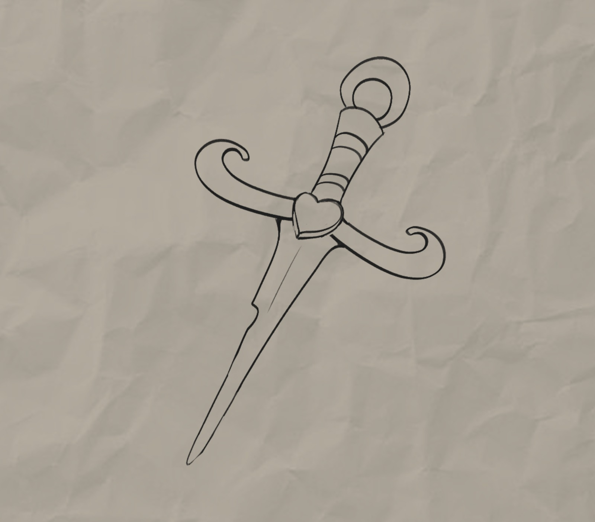
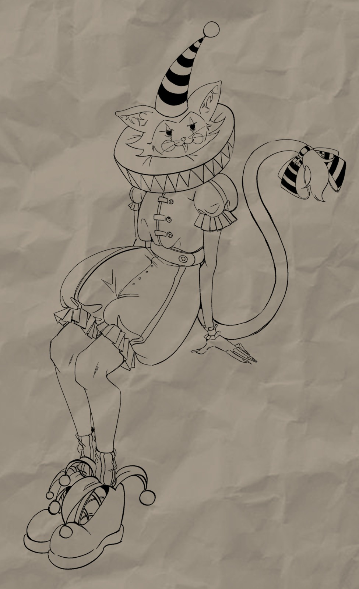
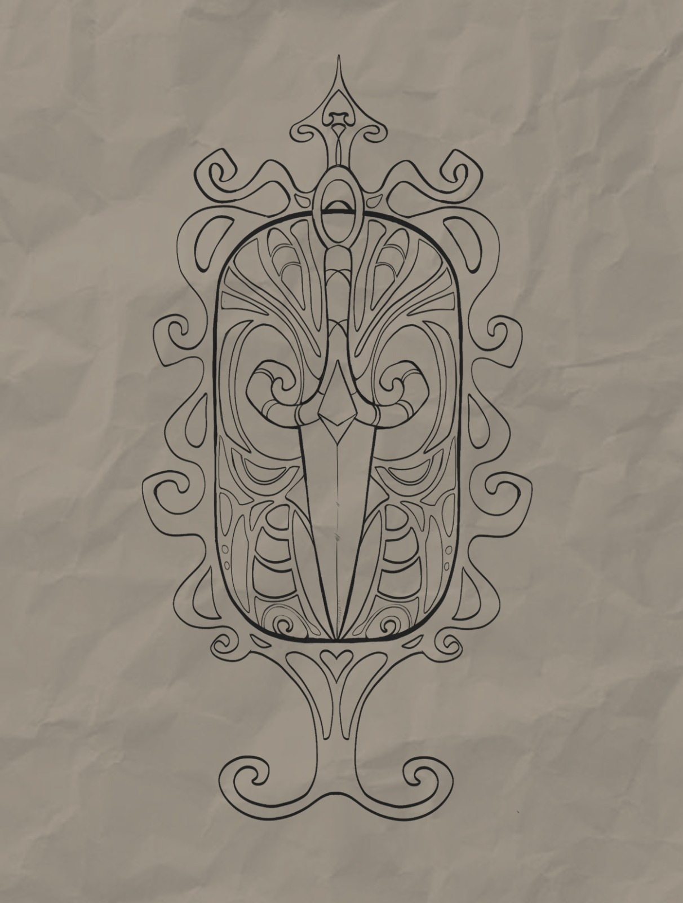
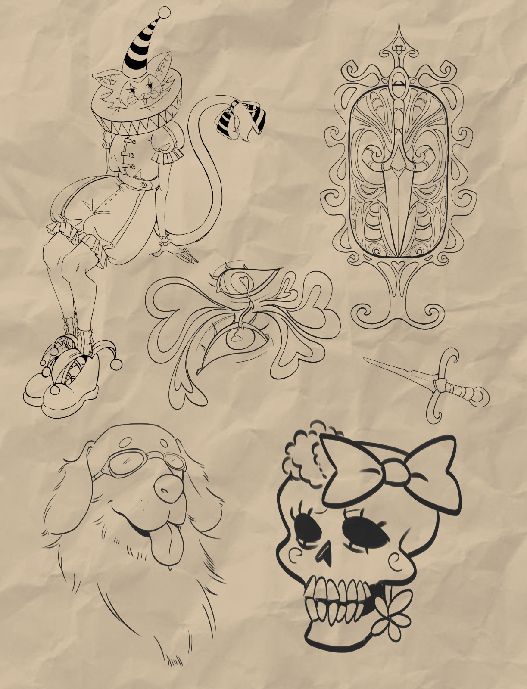
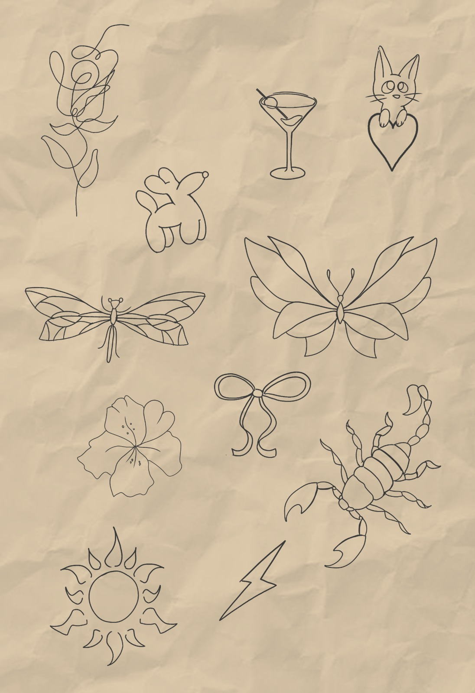

A 97Tattoo é uma empresa de tatuagem e piercing criada a partir da turma 3397,
que deu origem ao nome e à identidade da marca. O número 97 representa nossa
trajetória e o início de um projeto construído por jovens com o objetivo de
transformar a forma como a tatuagem é vista.
Funcionamento
Como trabalhamos
Trabalhamos com agendamento prévio para tatuagens e piercings,
garantindo organização, segurança e qualidade no atendimento.
Atuamos com os estilos fine line, nouveau, old school e cartoon,
em um ambiente profissional, acolhedor e livre de julgamentos.
Público-alvo
Para quem é a 97Tattoo
Nosso público é composto por jovens de 19 a 25 anos,
além de adolescentes de 16 e 17 anos, atendidos apenas
com autorização formal e responsável presente, garantindo
responsabilidade, segurança e transparência.
Produtos
EM BREVE
Novidades
Ta olhando o que?
Piercing
Perfurações feitas com materiais esterilizados,
joias de alta qualidade e profissionais experientes,
seguindo todas as normas de segurança.
Tatuagem
Tamanhos de Tatuagem
Pequena
1 a 10 cm — ideal para pulso e atrás da orelha.

Média
10 a 20 cm — perfeita para braço ou ombro.

Grande
Acima de 20 cm — costas ou coxa.

Tatuadoras & Body Piercing
Clique no card para ver portifólio
Sofia Tatuadora

Brenda Tatuadora

Emily Tatuadora
Perguntas Frequentes
Os maiores cuidados são feitos no pós-tatuagem. Como preparação, é importante hidratar bem a pele, alimentar-se antes da sessão e evitar consumo excessivo de álcool no dia anterior.
Mantenha a área limpa, aplique a pomada recomendada por pelo menos 15 dias e evite sol e imersão em água no primeiro mês.
Sim. Use sempre protetor solar acima de FPS 30 e mantenha a pele hidratada para preservar cores e linhas.
Em média, de 20 a 40 dias. A cicatrização completa ocorre somente após a queda total das crostas.
Sim, é normal durante a cicatrização. Não coce, não arranhe e nunca arranque a crosta.
Não. Arrancar a crosta pode remover tinta e causar falhas na tatuagem.
Não. Utilize apenas a pomada recomendada pelo tatuador para evitar infecções ou reações.
Consulte seu médico antes. Se a diabetes estiver controlada, geralmente é possível.
Pode clarear levemente. Mudanças grandes geralmente ocorrem por falta de cuidados ou exposição ao sol.
Pequenas variações não interferem muito. Mudanças bruscas podem alterar o desenho.
É um desenho pronto criado pelo artista, sem possibilidade de personalização.
Não. O laser pode causar queimaduras e desbotar a tatuagem.
Geralmente não. Cada artista possui uma linha de trabalho específica.
É altamente recomendável agendar. Atendimentos sem horário dependem da disponibilidade.
Dói por poucos segundos. Normalmente é menos doloroso do que se imagina.
A perfuração leva segundos. O processo completo dura entre 10 e 20 minutos.
Pode levar meses ou até um ano. Continue os cuidados mesmo após parecer cicatrizado.
Após pelo menos 8 semanas. Alguns piercings possuem exceções. Oferecemos serviço de troca mediante taxa.